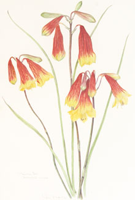

- Disappearing species
- A price on their heads
- Christmas Bells
- ...and Kangaroos
- The Ground Parrot
The Christmas Bell, Blandfordia grandiflora, and the Ground Parrot, Pezoporus wallicus, are just two examples of abundant and widespread wallum species succumbing to pressure of people and development despite the best efforts of Kathleen McArthur, WPSQ and concerned citizens.
Christmas Bells are currently listed by the Queensland Environmental Protection Agency as ‘Rare’ and its website uses the Bell as an example of how a once abundant living species becomes threatened. Loss of habitat, excessive harvesting, changed bushfire frequency and weed infestation are noted as the major causes.
Kathleen writes movingly of experiencing masses of these plants in full bloom and the wallum’s unique parrot flying at dusk, and their demise on Kawana in just a few years.
© WPSQ, Sunshine Coast & Hinterland Inc
Courier-Mail 7 December 1961
OUR CHRISTMAS BELLS HAVE A PRICE ON THEIR HEADS
Are we needlessly destroying the beauty of our countryside, and the wildlife w hich it has sheltered? Here is a view by well-known Queensland artist, Kathleen McArthur, writing from her home in Caloundra…
hich it has sheltered? Here is a view by well-known Queensland artist, Kathleen McArthur, writing from her home in Caloundra…
CALOUNDRA––Christmas Bells have a price on their heads in Queensland today. If it were not for this fact, I could advertise one of the most exciting sights in the country – acres of wallum thickly covered with large Christmas Bells. On discovering this wonderful spot I was so excited and so delighted I wanted to share the treat with all who might be interested. Experience, however, has taught me that very few people can be trusted to visit such places and leave with empty hands. This applies to all wildflowers but particularly to Christmas Bells, which are so readily sold. Commercially, a visit to such a spot could be worth a small fortune. That it would be illegal to pick them would not worry anyone for this law is not policed in Queensland.
SOME REGULAR VENDORS OF BELLS PICK OVER CROWN LAND, HAVING A CONVENIENT ARRANGEMENT WITH PRIVATE LAND OWNERS TO COVER THEM. Such a situation is depressing. These areas of beauty cannot be advertised as tourist attractions, for advertising would ensure their destruction.
Ban Sale
Continuous picking prevents seeding while natural mortality and fires soon destroy existing plants. Many areas close to Caloundra, such as the Dicky Beach wallum, were once covered with bells where never a bell has appeared for years. Everyone nowadays notices the absence of bells between the Bruce Highway and Caloundra because they were so much a feature of this drive in the past. The answer to all this is the prohibition of the sale of bells altogether, until such time as nursery-men or florists cultivate them for commercial purposes. It is possible to cultivate them and doing so would ensure their survival. Meanwhile, as often as I can spare the hours I escort ‘patriots only’ to view my find. They can count on some plants having twelve to thirteen flowered heads and will surely remember the experience for the rest of their lives. It is unlikely anyone will see such a sight again in this area for the Christmas Bell areas are doomed in the name of ‘tourist development’. What a paradox!
There are elements at work in the community that are destroying our land, destroying it self-righteously in the name of progres
 s. Commercial progress, of course! But a spiritual revolt is developing among our people. We want the character of our land kept for our children, and we are beginning to voice our protests against the ever-increasing destruction. As agitators, we have had our successes and grand failures (Hayman Island) but there is no stopping us now. The fight is on. As a veteran combatant, I know the ups and downs involved; the awful feeling of impotence, when, after apparently successful protestations, some fresh area of our land is unnecessarily and irrevocably destroyed. (Our shire council set aside an area as a wildflower reserve, and soon afterwards bulldozed it.) In the meantime, each one of us can do something.
s. Commercial progress, of course! But a spiritual revolt is developing among our people. We want the character of our land kept for our children, and we are beginning to voice our protests against the ever-increasing destruction. As agitators, we have had our successes and grand failures (Hayman Island) but there is no stopping us now. The fight is on. As a veteran combatant, I know the ups and downs involved; the awful feeling of impotence, when, after apparently successful protestations, some fresh area of our land is unnecessarily and irrevocably destroyed. (Our shire council set aside an area as a wildflower reserve, and soon afterwards bulldozed it.) In the meantime, each one of us can do something.
Replant
If everyone who owns or rents a plot of land were to retain, or replant it, with native trees, shrubs, and plants, and provide a bird bath, we would at least save many of our native birds. The bird bath and the trees go together, for birds cannot live without water, which bushland provides naturally. At first there may not be birds around to use the territory you have created, but they will come, if the flights between areas of feed are not too great for them. If you keenly want the wild life for yourself, then persuade others to do it too. You may have to provide them with trees and help to plant them as well. I know it is worth the trouble. As late as 1947 scrub birds came to our garden in Caloundra. At that time there were trees at regular intervals between the patches of scrub behind Caloundra and the King’s Beach reserve. There Canthium coprosmoides (Kooni) and Austromyrtus dulcis (Midyim) provided plenty of ripe berries, and Banksia and Melaleuca (paperbark) blooms kept stores of nectar. Now, progress having nicely tidied up the beach and its environs there are but six small, lonely trees growing there naturally. To record a little progress in the right direction, if somewhat late, the authorities now are planting this area with native trees. There have been no birds visiting the area for years.
Although the birds of the big forest no longer come near us, the garden is a permanent nesting home for Brown Honey-eaters (one of the sweetest songsters in our bush) and the Bar-shouldered Dove. Our visitors include many others, especially migrant birds. Here they find the foods they have always expected to find here. I feel sure that if all those people who want to help preserve the true character of our land were to plant those flowering and berry-fruiting native trees, much could be saved and some lost ground recovered.
A Corner
Just one corner of a suburban plot, massed with native flora, water available and free of insecticide could support a family of native birds. Then, while we are actually doing something practical to help we can still, and needs must, watch the activities of the authorities and start screaming the moment they try to sell us out.
Kathleen McArthur Slide Collection
© WPSQ, Sunshine Coast & Hinterland Inc
Caloundra Weekly 30 November 1967
Wildlife and Landscape
CHRISTMAS BELLS
The Christmas Bells to the north of Currimundi Lake are, once again individually and collectively beautiful. It is one of the few ‘goods’ that result from fire––you may remember that this area was burnt out a year ago.
In fact, without fire Christmas Bells cease flowering. After five years without burning, a Blandfordia patch produces few blooms, and after about ten years, no flowers at all. The Christmas Bell swamp near the Tewantin–Noosa Heads turn-off on the coastal highway had not been fired for about fifteen years and has not produced Bells for a number of years now. So, newcomers may well be intrigued by the sign there saying, ‘you must not pick’.
Next season it will be a different picture as the bad fires of Sunday 19th November swept through this land. However, the Bells there, as I remember them, cannot compare in size and colour with those around Currimundi. In the area of the Noosa River the smaller orange coloured Bell often predominates, whereas around Caloundra a flower without its brilliant crimson streaking is rare indeed.
At Their BestAnyone wanting to see Bells at their best will be rewarded by a visit to the Currimundi area in the near future. They are best to the east of the road about half a mile north of the bridge and they can be seen clearly from the road.
There was a time when I would not have dared to mention where to go to see wildflowers with a price on their heads for fear of the complete destruction of a season’s flowering. However, now I think we are more emancipated and constant propaganda has conditioned us into realising that there are more ways of enjoying flowers than putting them in vases; that those who come behind us might like to look too and a few of us even go so far as to realise that if no flowers are allowed to seed each season the species will die out completely.
So go, as many have already done, even coming up from Brisbane especially––as the Government Botanist did––to see them, to photograph them and by your presence also police their protection.
Precious AssetsOur Christmas Bell swamps are amongst our precious assets yet, believe it or not, the only land reserved for them on the Sunshine Coast is a few acres on the edge of the Currimundi Wildflower Reserve.
Tears come up to my eyes, to be followed quickly by anger when I remember the sight of Bells in flower on what is now Caloundra Downs, where THE most movingly spectacular sight was created by the huge area of red and orange flowers, backgrounded by green sedges and highlighted by the white trunks of tall Paperbarks––GONE FOREVER. We appealed for their preservation to those who could have saved them, to no avail.
Time is running out. Before next season the last of our Christmas Bell swamps may have been bulldozed out of existence. Who cares? Perhaps when the final assessment is made we might prefer them on film at home.
Kathleen McArthur
Wildlife Preservation Society of Queensland, Caloundra Branch
Reproduced with permission of Sunshine Coast Newspapers and Hugh McArthur
© WPSQ, Sunshine Coast & Hinterland Inc
Sunshine Coast Weekly Advertiser 28 December 1972
Wildlife and Landscape
CHRISTMAS BELLS AND KANGAROOS
For this column this week I wrote an article of review on our local  environment, but it was so depressing it had to be scrapped. It is hard to write cheerful articles these days on the subject of our wildlife and landscape. After a prolonged mental reconnaissance, two bright subjects emerged to be treated in isolation: Christmas Bells and Kangaroos.
environment, but it was so depressing it had to be scrapped. It is hard to write cheerful articles these days on the subject of our wildlife and landscape. After a prolonged mental reconnaissance, two bright subjects emerged to be treated in isolation: Christmas Bells and Kangaroos.
On what is left of the wildflower plain between Currimundi and Point Cartwright, there may still be seen, and wondered at, beautiful patches of our red and gold Christmas Bells. They may not be along the roadside, but by walking back from the road a distance, some will be found. These are protected wildflowers and not for the picking, despite the knowledge that the developers will finally destroy them. See them this season, take your friends and families to see them while there is still time and keep them as a precious memory or as a record on film.
Amongst the Christmas Bells will be other wildflowers to discover: the ferny, star-dotted Baeckea and the purple Melaleuca thymifolia. Little flowers like the Sundews and Bladderworts will be nestling in the wet patches, and if you flush a bright green parrot, as you watch it fly low over the vegetation before dropping suddenly, you can tell yourself that this is a rare bird, the Ground Parrot, and you may never see it again in Queensland outside two gazetted National Parks. It is an interesting bird with crepuscular habits and a call quite unlike any other of the parrot family unless the possibly extinct Night Parrot of the interior, which is its only relative, and may have a similar call, but is quite unknown.
The home of the Christmas Bells and the Ground Parrot is going, going fast and this season may be your last chance to see them both on the Sunshine Coast. They could be preserved on Cooloola, but after yet another year has passed, our Cooloola National Park is still only a dream.
During the year, we local residents can always take our visitors to see Kangaroos. They are on the Caloundra and Headland golf courses, but the public would hardly be welcome to wander at will across the fairways. The spot we use is the grassy verge of the forest behind the Military Jetty estate at the southern end of Golden Beach. Early morning or late afternoon grazing kangaroos can be watched there. They are very tame and can be approached quite closely in a car. This tameness is obviously due to the fact that the nearby residents value their presence and always take their dogs out on leads. Remember this! Do not let your dogs free where kangaroos graze. Still more ‘roos might be seen at the back of the new estate along Bells Creek. When driving along Golden Beach, please do so slowly and watchfully as kangaroos cross these roads especially at night. Headlights confuse them so keep driving lights dimmed. Please help us reserve [sic] what little wildlife is left.
Kathleen McArthur
Wildlife Preservation Society of Queensland, Caloundra Branch
Reproduced with permission of Sunshine Coast Newspapers
© WPSQ, Sunshine Coast & Hinterland Inc
[Sunshine Coast Weekly Advertiser, series published 1973–1975]
Birds of the Sunshine Coast
No. 84 of a series by Kathleen McArthur; photograph © by J. Le Gay Brereton
THE GROUND PARROT
In the past, feature writers have been reluctant to write abo ut the Ground Parrot for fear of depredations on it by trappers. However trappers would not have wiped out these birds entirely, mainly because they are unsuitable as aviary birds, as the developers have done through the destruction of their habitat for cattle pastures and housing.
ut the Ground Parrot for fear of depredations on it by trappers. However trappers would not have wiped out these birds entirely, mainly because they are unsuitable as aviary birds, as the developers have done through the destruction of their habitat for cattle pastures and housing.
While the vegetation of their habitat varies throughout the range of the bird between its northern limit on Fraser Island, down the east coast in suitable pockets, across to Tasmania, extinct now in South Australia and threatened in its limited Western Australian range by the same sort of development that we have here, in this district it is the wildflower plain.
Not so long ago Ground Parrots were commonly flushed when one went wildflowering on the plain between Currimundi and Point Cartwright. Now one rarely can show off this famous parrot to overseas visitors and with the developers’ mechanical monsters every day eating further into the habitat, the future is depressing.
Whether the Mooloolah River National Park (R800) and R892, the Currimundi Reserve, will be sufficient to sustain our population of these parrots is not known. It is not even known how far they can fly, eg, if fire swept through R892, could ground parrots fly to R800, approximately a mile away?
About five years ago when Professor Brereton of New England University was doing research on Australian parrots, he noticed the large eyes of the Ground Parrot, which indicated to him that it was nocturnal. He mentioned this to Carole Bevege who soon afterwards was in Caloundra and investigated this suggestion. It was true.
As dusk faded in, the birds began to call their strangely un-parrot like muted whistle, ascending the scale two, three or four notes at a time. Then right on dark they stopped calling and began to fly. One had to crouch low to see the silhouette against the last of the light in the western sky, for they flew low over the vegetation. After that, without calls and without light to see, it was impossible to know what the circumstances were. During the season of July–August, which we presumed was their breeding time, the evening calling was strong, repeated to a lesser extent at dawn and occasionally short calls were heard during the day.
The Ground Parrot is a seed eater, so it may possibly prove to be adaptable to grassed pastures if these were not grazed before seeding as Charles Barret in his book Parrots of Australasia wrote: ‘Although epacris and grass-tree covered country…are its favourite haunts, I have seen it equally at home in paddocks thickly covered with Scotch thistle’. The only other parrot that in any way resembles the Ground Parrot is the Night Parrot of desert country in the centre of Australia, and it could be extinct for it has not been reliably reported for over half a century.
As fire on the wallum plains is necessary at intervals to ensure the maximum floristics, so too is it probably equally important to the bird that has evolved with it. The vegetation has to be open enough for the bird to walk between the plants.
When all that is left are the few reserves, management based on biological knowledge will be absolutely necessary.
Reproduced with permission of Sunshine Coast Newspapers
© WPSQ, Sunshine Coast & Hinterland Inc
Lunch Hour Theatre Script Chaos and the story-teller, [no date], extract
[On the Ground Parrot at Kawana]
Back in 1974, three young friends and myself decided we should study the nocturnal Ground Parrot [Pezoporus wallicus] across the wallum between Currimundi and Point Cartwright––the present Kawana. We stopped halfway up the track to include as many birds as possible and one of us was ready with the tape recorder; we didn’t have to wait for dark as we discovered that the bird is crepuscular and begins his activities at dusk. It would rise from the vegetation, about a metre high, and fly just above it so we had to crouch down to view it against the last light in the sky; all the while it was calling full-throatedly its rising bell-like notes. It was one happening, the birds calling right across the length and breadth of the plain. It was thrilling! The next day the news was passed to Professor Brereton at New England University who flew up in his little plane to share the experience with us, as he was studying parrots at the time.
There are no ground parrots there now.
Reproduced with permission of Hugh McArthur; courtesy of Caloundra City Libraries
© WPSQ, Sunshine Coast & Hinterland Inc